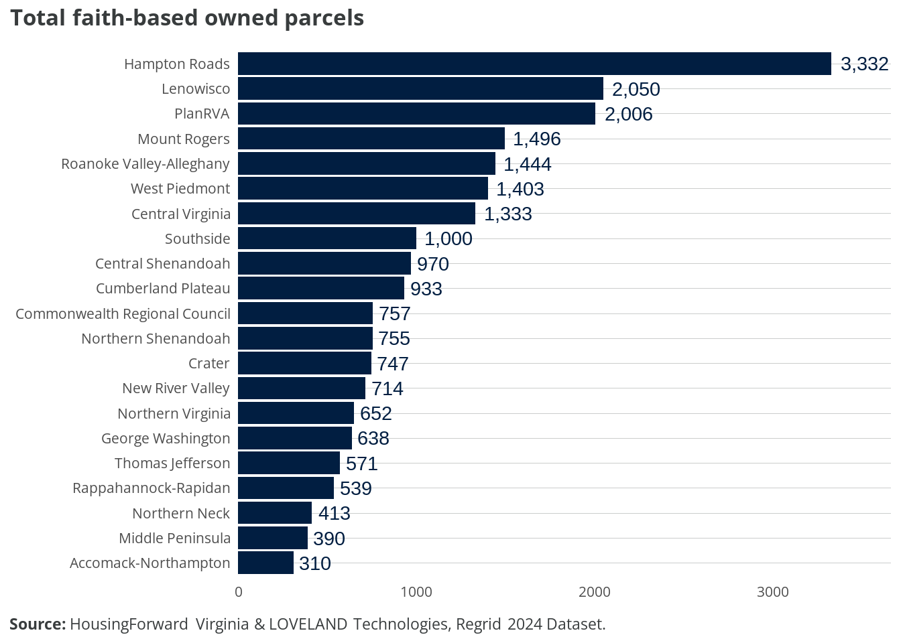
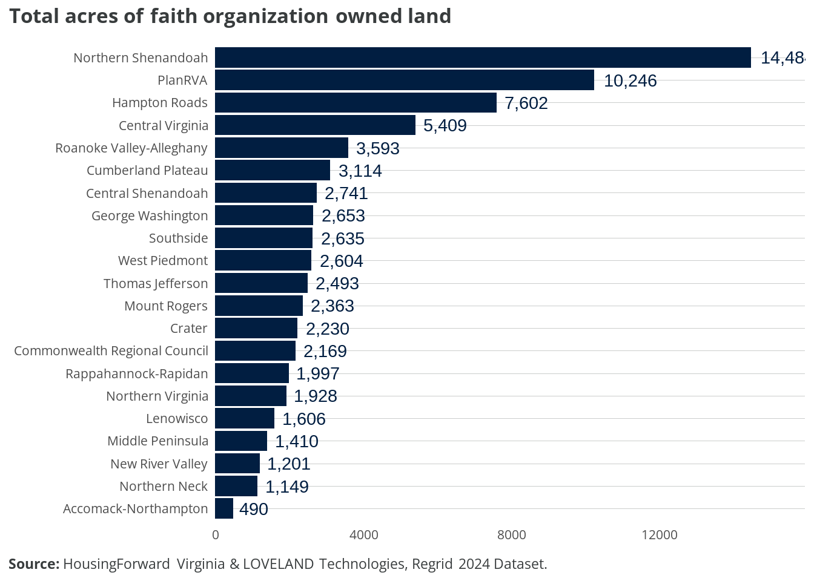
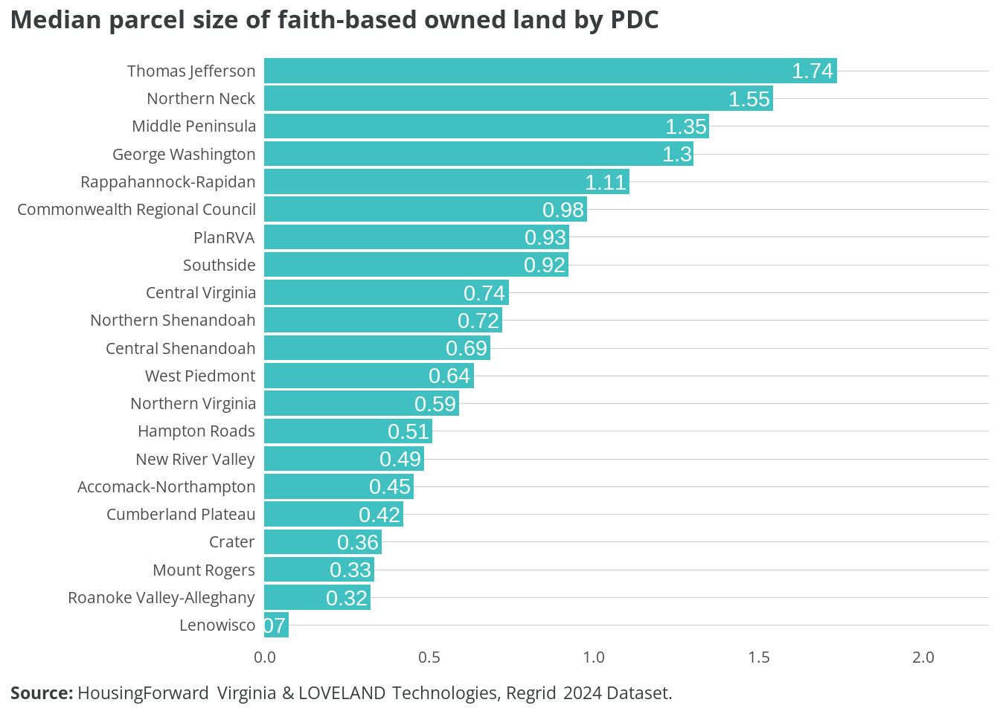
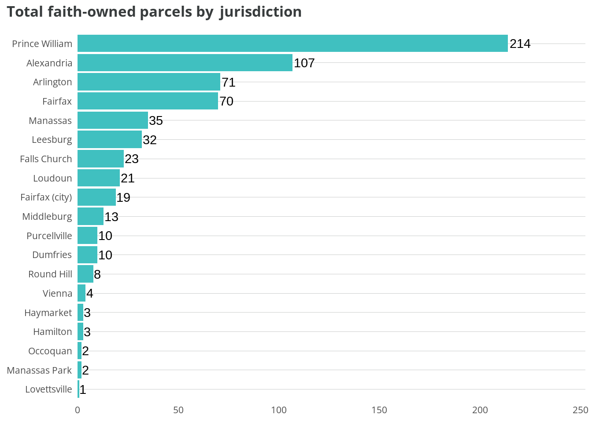
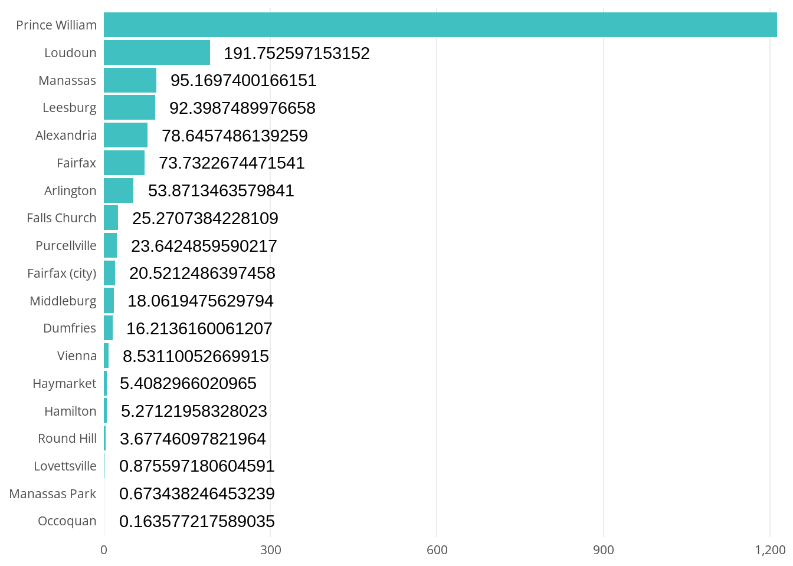
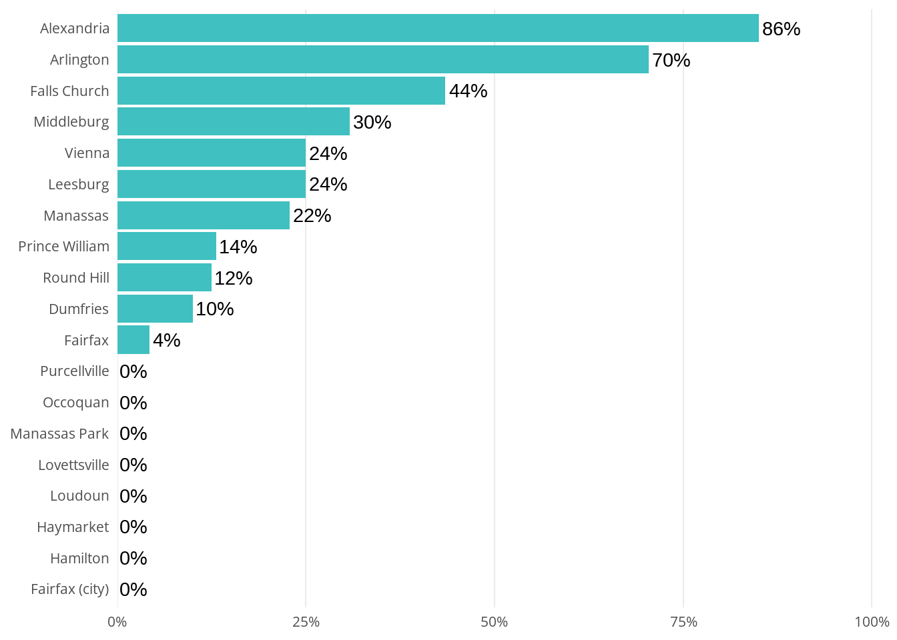

2 Findings
2.1 Findings
Out of the over 4 million parcels in Virginia, 22,453 were identified as likely owned by a faith-based organization — with a 95% confidence level that the true accuracy of the entire dataset lies between 99.03% and 100%. These findings were based on a keyword search with a process of retention and elimination based on known faith-based and secular entities. Some faith-based properties could be absent from the analysis due to terms or phrases not accounted for. However, the following represents a significant, if not an overwhelming majority, of parcels owned by faith-based organizations in the Commonwealth of Virginia. In total, these parcels amount to 74,116 acres of land. To put this into context, the City of Richmond is roughly 40,000 acres, meaning the identified parcels amount to nearly twice the size of Richmond.
2.1.1 By Planning District Commission
To investigate geographic patterns further, HFV utilized Virginia’s 21 planning district commissions (PDCs) to assign parcels to a geographic region. This is helpful because not all jurisdictions in Virginia are part of a metropolitan or micropolitan statistical area, whereas all jurisdictions are represented by at least one of the 21 PDCs. In addition, PDC boundaries represent an area wherein there are distinct socioeconomic patterns.
The Hampton Roads region exceeds its peers in the number of parcels owned by faith-based organizations at 3,332. The LENOWISCO and PlanRVA regions follow at just over 1,000 fewer parcels - 2,050 and 2,006, respectively.
These rankings change when we look specifically at acreage. The Northern Shenandoah Valley region rises to the top of list at just over 14,000 acres of land owned by faith-based organizations, while the PlanRVA region follows at 10,246. Hampton Roads still stays in the top three, but comes in at 7,602 acres. The LENOWISCO region falls down the list to the 17th region with the most acreage at only 1,606 acres. While the LENOWISCO region contains significantly more parcels than several of its peers, those parcels are undoubtedly smaller in area.

Exploring individual parcel size gives a better understanding of opportunities for viable residential development. To do this, we explore the median parcel size rather than the average in order to account for outliers that may skew the results. By looking at the median parcel size, the rankings change once again. The Thomas Jefferson region has the largest parcels with a median size of 1.74 acres - just under the size of a FIFA standard soccer field (1.76 acres). The Northern Neck follows at 1.55 acres and the next six regions sit between 1.3 and 0.92 acres. The remaining regions have a median parcel size below 0.75 acres - with the LENOWISCO region have the smallest median parcel size at under 0.10 acres.

At the local level, we can identify jurisdictions with significant acreage of faith-based owned parcels. Based on median parcel size, Goochland County leads its nearest peer by over 1.5 acres with a median parcel size of 7.18 acres. Cumberland County comes in at 5.5 acres. The PlanRVA region is well-represented among jurisdictions with large median parcel sizes - with Goochland, Powhatan, Henrico, New Kent, Hanover, and Charles City represented (6 of the 8 counties/cities within the PDC).

The top ten organizations who own the most land in jurisdictions along the I-95/I-64 corridor are listed below.The Presbyterian League of the Presbytery of Eastern Virginia owns the most acreage with 12 parcels that amount to 3,429 acres in New Kent County.
| Owner | Jurisdiction | Total Acres | Median Parcel Size | Number of Parcels |
|---|---|---|---|---|
| Presbyterian League Of The Pres. | New Kent | 3429.02 | 285.75 | 12 |
| New Kent Christian Center | New Kent | 326.41 | 65.28 | 5 |
| First Baptist Church Of Marshall Heights, D Drummond & A Teel, Tr | King George | 265.36 | 265.36 | 1 |
| New Life Church Of Hampton Trustees | Southampton | 243.58 | 243.58 | 1 |
| International Mission Board, S B C | Hanover | 234.69 | 3.07 | 5 |
| Southside Church Of Nazarene | Chesterfield | 207.02 | 50.92 | 4 |
| James River Baptist Church | James City | 197.65 | 197.65 | 1 |
| Saint Pauls Baptist Church | Henrico | 177.39 | 49.10 | 4 |
| The Edge Christian Camp Inc | Surry | 167.69 | 167.69 | 1 |
| Williamsburg Christian Retreat Assoc Inc | James City | 158.48 | 158.48 | 1 |
2.2 General Assembly Districts
2.3 Northern Virginia
Conducting a spatial join in QGIS between the 652 identified parcels and the Northern Virginia Zoning Atlas resulted in 648 parcels retained. The four parcels that were removed were located in areas not covered by the Virginia Zoning Atlas, most likely to the area being deemed protected or undevelopable.
Reading layer `joined_layer' from data source
`C:\Users\ericv\Desktop\github\yigby\data\nova_faith_zoning.gpkg'
using driver `GPKG'
Simple feature collection with 653 features and 57 fields
Geometry type: MULTIPOLYGON
Dimension: XY
Bounding box: xmin: -77.77143 ymin: 38.53685 xmax: -77.04276 ymax: 39.27638
Geodetic CRS: WGS 84

Reading layer `joined_layer' from data source
`C:\Users\ericv\Desktop\github\yigby\data\nova_faith_zoning.gpkg'
using driver `GPKG'
Simple feature collection with 653 features and 57 fields
Geometry type: MULTIPOLYGON
Dimension: XY
Bounding box: xmin: -77.77143 ymin: 38.53685 xmax: -77.04276 ymax: 39.27638
Geodetic CRS: WGS 84function (x)
{
number(x, accuracy = accuracy, scale = scale, prefix = prefix,
suffix = suffix, big.mark = big.mark, decimal.mark = decimal.mark,
style_positive = style_positive, style_negative = style_negative,
scale_cut = scale_cut, trim = trim, ...)
}
<bytecode: 0x000001bf5117d1d0>
<environment: 0x000001bf4707c648>

